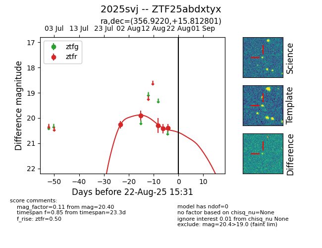

Target 2025svj at 2025-08-21 11:20, see:
FINK: fink-portal.org/ZTF25abdxtyx
Lasair: lasair-ztf.lsst.ac.uk/objects/ZTF25abdxtyx
ALeRCE: alerce.online/object/ZTF25abdxtyx
TNS: wis-tns.org/object/2025svj
YSE: ziggy.ucolick.org/yse/transient_detail/2025svj
alt names
ZTF25abdxtyx (ztf,alerce)
2025svj (tns,yse)
coordinates:
equatorial (ra, dec) = (356.9220,+15.81280)
galactic (l, b) = (101.2463,-44.35807)
photometry
last ztfr=20.40
5 ztfr detections
